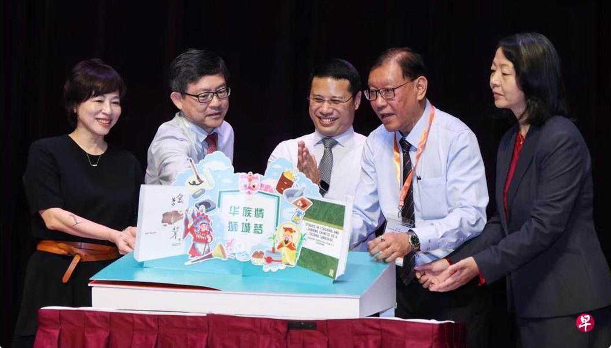
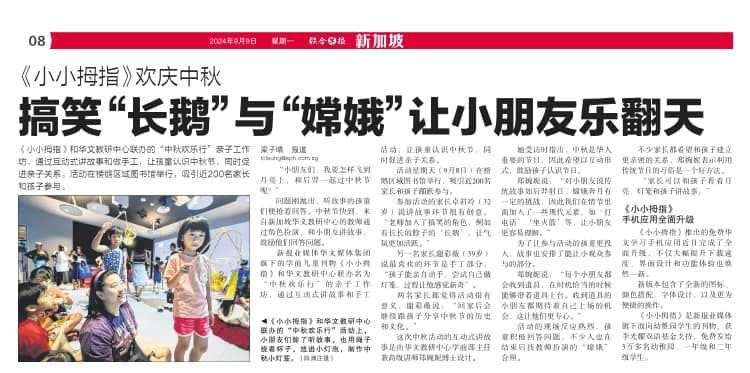
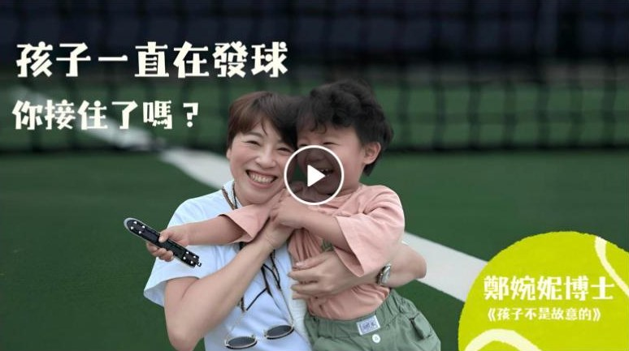

新加坡幼小華文閱讀
與兒童發展專家
Child Development & Early Chinese Reading Specialist, Singapore
從一本繪本出發，延伸到遊戲、戲劇與學習環境，讓孩子在新加坡的生活裡讀懂華文。兒童文學作家、學前華文師資培育者，長期推動新加坡學前華文教育的在地化。

- 30年幼教經驗
- 30+本著作與教材
- 3本入選國家圖書館書單
- 19集電視訪談
- 5屆全國學前教具比賽
代表專長
Signature work幼兒教育Early childhood education, birth to eight
深耕幼教三十年，以 0 至 8 歲的兒童發展為根基，涵蓋幼兒園課程與教學、節慶教學與全園活動、教具設計、個案教學與幼兒園危機管理。在新加坡率先將學前節慶教學系統化，並推動學前華文教具比賽，在臺灣與新加坡培育幼教師資。
幼小華文閱讀與幼小銜接Chinese reading and the move from preschool to primary
提出「閱讀生態系」的概念：閱讀不止於老師提問，而是從繪本延伸到自主戲劇與遊戲、桌遊與延伸活動，幷包括老師在故事角與環境上的事前準備。關注學前到低年級的閱讀如何自然銜接，並陪伴孩子、家長與老師走過從幼兒園到小一的轉變。
華文教育的在地化Localising Chinese-language education
新加坡的學前華文老師許多來自海外。在地化不是教幾樣本地符號，而是理解組屋、巴剎與本地華語裡的生活與價值，讓課程真正屬於新加坡的孩子。
兒童體驗設計與成癮設計Experience design and addictive design for children
研究兒童手機遊戲、媒體組合與兒童流行文化，從兒童發展看產品與遊戲如何吸引孩子、又如何保護孩子。曾任臺灣與日本遊戲公司的兒童產品開發顧問。
閱讀生態系
鄭博士提出的閱讀概念：以繪本為核心，並從故事環境與氛圍設計開始，向外延伸到共讀與提問、自主戲劇與遊戲、桌遊與延伸活動，最外一層是學習環境與教師的事前準備。閱讀不止於老師提問，而是一整套圍繞孩子展開的經驗。
- 陽光載體：靜態與動態的兒童文學，並延伸至合乎幼兒發展的選書。
- 水教師的講述：老師如何說故事、何時停頓、如何回應孩子。
- 空氣延伸活動：老師由繪本衍生、輕置於教室的活動，如繪本桌遊與遊戲劇本。
- 土壤環境：故事角、學習環境與老師的事前準備，閱讀在這裡紮根。
四者缺一，閱讀便難以生長；四者的比重，也隨幼兒年齡而調整。
關於鄭博士
About鄭婉妮博士是幼兒教育專家，以 0 至 8 歲的兒童發展為根基，現任新加坡華文教研中心學前部主任兼高級講師。她在臺灣與新加坡從事幼教工作超過三十年，幾乎教遍幼教師資培育的各門課程。
她的學士與碩士皆主修兒童福利，因此看待幼兒教育始終從兒童的權益與福祉出發，也關注家庭與需要額外支持的孩子。她曾任臺灣家庭教育服務中心諮商輔導專員，長期接觸兒童、青少年及其家庭。
在臺灣，她參與幼保系的課程規劃、課程委員會與實習委員會，熟悉師資培育的完整養成；2015 年起深耕新加坡的雙語與華文幼教，也為中國及華語地區的幼教機構提供培訓與交流。她同時是散文作家與兒童文學作家：早年常在臺灣報刊發表教育社論與散文，散文《駐外》獲兩岸交流紀實文學獎優選，並出版短文集《紛沓》《愛情行上學》；來到新加坡後，出版三十餘本繪本、教學專書與大學教材。
- 現職
- 新加坡華文教研中心 學前部主任、高級講師
- 兼任
- 香港中文大學 名譽副教授；新躍社科大學 學前教育兼任講師
- 學歷
- 國立屏東教育大學 教育行政研究所 博士（2012）
中國文化大學 兒童福利研究所 碩士（1996）
靜宜大學 青少年兒童福利學系 學士（1994） - 曾任
- 臺灣中華醫事科技大學 助理教授、兒童發展中心主任
臺灣家庭教育服務中心 諮商輔導專員 - 臺灣經歷
- 全國性兒童福利專業人員、保母專業訓練及園長領導與管理培訓 講師
教育部幼兒教保核心專業課程 講師
技專校院統一入學測驗「兒童福利」科 命題委員
鈊象電子 兒童遊戲、卡牌與玩具顧問
臺灣幼兒園傳染病危機管理 顧問 - 諮詢
- 國家圖書館管理局 華文諮詢委員（2020–2024）
「新加坡可愛動物」繪本系列顧問（雲樹出版社，李光耀雙語基金支持，2024） - 獲獎
- 《玩物志》入圍新加坡最佳教育類書籍獎
繪本入選國家圖書館管理局推薦書單：《12歲前必讀的100本新加坡讀物》（2 本）、《9歲前必讀的120本繪本（2025版）》、SG60《60本新加坡好書推薦》
散文《駐外》獲臺灣「兩岸交流紀實文學獎」優選（2011）
專業領域
Expertise · 0–3 · 3–6 · 6–8 歲幼兒課程與教學
- 幼兒園課程設計與統整以遊戲與繪本為本，規劃主題、方案與統整課程
- 遊戲式與探究式學習有目的的遊戲：從主導到支持，讓孩子在遊戲中建構知識
- 師幼互動與提問以優質互動支持主動學習：提問設計、回應技巧與互動引導
- 節慶教學與全園活動企劃在新加坡率先將學前節慶教學系統化，從課室教案到全園活動
- 學習區與環境規劃故事角、學習區與教室環境的規劃與佈置
兒童發展與學習
- 嬰幼兒發展與保育依戀、氣質與 0–3 歲的照護互動
- 價值觀、社交情緒能力與學習品格情緒調節、人際關係、心理韌性與好奇、堅持等學習品格的培養
- 幼兒行為解碼與回應讀懂行為背後的需求，運用 3R、3S 與回應式互動
- 語言發展與早期讀寫語言習得、雙語發展與學前到低年級的讀寫銜接
- 幼小銜接從幼兒園到小一的學習準備、生活適應與社交情緒支持，以及家長與教師的銜接合作
- 特殊需求與融合教育高敏感兒童、閱讀障礙與差異化支持
華文教學與兒童文學
- 幼兒與低年級華文二語教學華文作為第二語言的課堂設計，回應不敢開口、只說單字或習慣說英文的孩子
- 繪本教學與閱讀生態系從學前到低年級，以共讀提問、延伸活動與閱讀環境構成完整的閱讀經驗
- 低年級華文閱讀與識字橋樑書與分級讀物的選用，引導孩子從圖畫書走向文字閱讀，培養自主閱讀的習慣
- 故事說演與戲劇教學沉浸式故事、角色扮演與 People Game 互動設計
- 兒歌、童詩與語言遊戲兒歌與童詩的改編、創編與朗讀，結合肢體律動與語言遊戲
- 兒童文學與繪本創作兒童文學賞析、在地繪本創作，以「故事創作三階法」帶教師與學生從自編故事到完成繪本，亦可延伸為低年級的故事寫作
兒童福利與家庭
- 兒童福利與兒童權益兒童福利學士、碩士出身，從兒童福祉看幼兒教育
- 家庭教育與親職教育教養觀念、親子溝通與家庭衝突
- 親子共讀與家庭語言環境在家營造華文與閱讀的環境
- 親師溝通與家長合作正向溝通與家園合作
- 兒童與家庭諮商輔導曾任臺灣家庭教育服務中心諮商輔導專員
遊戲、教具與兒童體驗設計
- 桌遊設計與遊戲教學繪本桌遊與桌遊教學，適用於幼兒園與小學低年級，培養語言力與社交力
- 教具設計與教學資源推動學前華文教具比賽，每屆成果出版成書
- 兒童使用者經驗設計以兒童發展為本的產品、遊戲與活動體驗設計
- 成癮設計與兒童流行文化手機遊戲、媒體組合與兒童消費文化
- 兒童產品開發顧問曾任臺灣與日本遊戲公司兒童遊戲、卡牌與玩具顧問
師資培育與園所經營
- 師資培育課程與實習輔導幼保系課程規劃、實習輔導與大學教材撰寫
- 教師專業成長與職業倦怠教師情緒、自我激勵與跨文化適應
- 回應式團隊與園所領導教師之間、華文與英文老師、教師與主管的合作
- 課程與教學評鑑、指標建構教育評鑑與專業指標的建構
- 幼兒園危機與衛生管理博士論文以德爾菲法建構幼兒園傳染病危機管理指標
著作
Books新躍社科大學幼兒教育與華文教育學士課程（BECCE）中由本中心承擔的課程，歷年教材均由鄭博士督導與審閱。
開創與實踐
Initiatives- 1997–2015
臺灣幼教現場的十八年：從課程到園所經營
1997 年起任教於臺灣中華醫事科技大學幼兒保育系，歷任講師、助理教授，2001 至 2003 年兼任兒童發展中心主任，2013 至 2014 年出任招生聯合服務中心主任。參與幼保系系務的創建，召集學生實習委員會與課程發展委員會，規劃並創辦學校附設幼兒園，亦參與教育部技專校院評鑑；同時長期為臺灣多所幼兒園提供經營管理、課程與教師專業發展的輔導。其間擔任全國性兒童福利專業人員、保母與園長培訓講師及四技二專統一入學測驗命題委員，並主持教育部、內政部補助的托育與兒童福利研究案。十八年間橫跨師資培育、園所輔導、行政與研究，奠定其理論與實務並重的幼教實踐者根基。
- 2015
出任新加坡華文教研中心學前部主任
受聘為新加坡華文教研中心學前部主任兼高級講師，主持學前部的課程創新、師資專業發展與學前華文教育研究。面對不同的語言政策與學前體制，她將臺灣的專業重新置於新加坡的語境中檢視，並以學前華文教師的跨文化調適為題展開研究；此一經驗成為日後推動學前華文教育在地化的起點。
- 2016
提出「新任幼兒華文教師在地化培訓課程」
撰寫並向幼兒培育署（ECDA）提出課程方案，首次把「文化調適」帶進新加坡學前華文師資培訓。
- 2016 起
節慶教學的系統化
以《來！來過節》為起點，為新加坡各族群的節日編寫學前教案、評量與教學資源，率先將學前節慶教學系統化，並由課室教案延伸至全園活動企劃。

2016.06 《來！來過節》新加坡學前節慶教案暨教材發布會，由教育部兼貿工部高級政務次長劉燕玲主持（圖：新加坡華文教研中心） 當年媒體報導（點圖看大圖）

《聯合早報》2016.06.19〈讓孩童了解各族節慶拉近距離〉，文中介紹鄭婉妮博士為《來！來過節》作者之一 
The Straits Times 2016.06.19〈Teaching kids Chinese through local culture〉 - 2018 起
創辦學前華文教具比賽
每屆一個主題：生活材料、桌遊、故事板、本地華語繪本、繪本×桌遊。每一屆整理成書，累積在地的教學資源。
- 2019 起
以原創繪本深耕在地化
自《煙囪在哪裡呀？》起，每年推出一本以新加坡為場景的聖誕繪本，並主持新小瓜兒童繪本系列與李光耀雙語基金支持的 5E 繪本系列，把組屋、紅頭巾與本地華語寫進孩子的閱讀經驗；多本入選國家圖書館管理局推薦書單。
- 持續
政策跟進與專業諮詢
長期追蹤新加坡學前教育與母語教育政策的發展，包括幼兒培育署的課程框架與融合教育政策，並將之轉化為師資培訓、課程與教材；曾任國家圖書館管理局華文諮詢委員（2020–2024），亦持續受政府機構、出版社與媒體諮詢，就幼兒教育與華文學習議題提供專業意見。
- 持續
學位課程建構與著述
參與建構新躍社科大學幼兒教育與華文教育學士課程（BECCE）的課程架構，並督導由中心承擔的課程，歷年所有課程教材均經她審閱；親自撰寫兒童文學、社交情緒、多元文化與雙語教育等大學教材，2027 年推出全新改寫的《學前特殊兒童教育》。十年間出版三十餘本繪本、教學專書與大學教材，著述未曾間斷。
- 持續
走進社區
帶領鄭小瓜故事團走進圖書館、學校與社區，並為資源較少的家庭提供公益工作坊，以繪本、說故事與語言遊戲陪伴孩子與家長。
- 2025 起
提出「閱讀生態系」
以繪本為核心，從故事環境、教師講述到延伸活動與學習環境，建構一套圍繞兒童展開的閱讀概念，並關注學前到低年級的閱讀銜接。
演講與媒體
Talks & media
主題演講
- 〈Reimagining Santa Claus in a Tropical Asian City: Cultural Codes of Childhood in Singapore Picture Books〉，俄羅斯南方聯邦大學（Southern Federal University）國際學術會議「Child in the World of Culture: Values and Meanings」（線上受邀發表）
- 〈兒童文化設計 × 5E 框架：打造支撐兒童能動性的閱讀宇宙〉，蘇州大學「讓兒童成為太陽——新幼教國際學術會議」專題演講
- 〈凝觀故事的根，行走文化的路：從本地繪本看新加坡學前華文教育的想象與實踐〉，新加坡學前教育論壇（SUSS）
- 〈從煙囪說起：新加坡繪本創作中的文本在地化歷程〉，第十五屆亞洲兒童讀物節（AFCC）
- 〈繪本的厚度：從繪本出發的新加坡本土化思考與嘗試〉，第七屆華文作為第二語言之教與學國際研討會
- 〈心坎裡的繪本：繪本創作的兒童發展元素〉，亞洲兒童讀物節（AFCC）
- 〈後疫情時代的幼兒園教室〉〈疫情下的遊戲轉變：桌遊新章〉，第六屆華文作為第二語言之教與學國際研討會
- 〈新加坡學前華文教師跨文化適應之探討〉，第五屆華文作為第二語言之教與學國際研討會
- 〈新加坡華文職場現狀及華文教師的跨文化適應〉，開拓華語文教育產業海外市場需求計畫（臺北）
- 〈溯源追本：新加坡幼兒教育發展軌跡〉，2017 百年幼教論壇暨國際學術研討會（高雄）
- 〈數位科技與兒童〉，2016 百年幼教論壇暨學術研討會（高雄）
親子故事說演
- 《我也要去！》新書發布會暨親子沉浸式故事派對（中央公共圖書館）
- 南洋小學聖誕故事會：三個故事一條線，全場親子共演
- 《我要我的屁屁馴鹿！》新書發布會暨親子沉浸式故事派對（中央公共圖書館，與陸育克老師合演）
- 華助會（CDAC）親子閱讀嘉年華：帶領教師團隊說演雙語故事，約 200 個家庭參與
- 《啊！馴鹿要請假？》聖誕新書發布會暨故事說演
- 華助會「華文閱讀嘉年華」：帶領教師團隊導讀原創繪本（《聯合早報》報道）
- 《小小拇指》中秋親子工作坊：「長鵝」與「嫦娥」故事說演（《聯合早報》報道）
- 《神秘的聖誕禮物》聖誕新書發布會暨故事說演
- 《想要變胖的聖誕老人》聖誕新書發布會暨故事說演
- 《聖誕老人的紅頭巾》聖誕新書發布會暨故事說演
- 《聖誕老人的人字拖》聖誕新書發布會暨故事說演
- 《煙囪在哪裡呀？》聖誕新書發布會暨故事說演
ECDA 與學術研討會
- 〈繪本中的道具：凝聚幼兒的神奇力量〉，幼兒培育署（ECDA）幼教研討會
- 〈與自然共舞：室內外光影遊戲〉，ECDA 幼教研討會
- 〈華語跑跳碰：室內體能遊戲篇〉，ECDA 幼教研討會
- 〈新加坡華族幼兒漢字書寫發展的個案研究〉（與鄭迎江、謝錫金合著），第八屆漢字與漢字教育國際研討會（東京）
- 〈教學活動的構思：反思新加坡學前節慶教材的構思與設計〉（與陳志銳、陳思慧、蘇毓婷合著），新躍大學幼教研討會
- 〈有限布幕，無限想象〉，新躍大學幼教研討會
- 〈新媒體時代下的兒童流行文化〉，2016 百年幼教論壇暨學術研討會（高雄）
- 〈語言的多元存在：新媒體載體下兒童語言與情感在華文教育中的啟示與應用〉，第四屆華文作為第二語言之教與學國際研討會
- 〈新時代新媒體的兒童遊戲面貌：質變的兒童遊戲〉，世界學前教育組織（OMEP）第 65 屆世界大會（上海）
- 〈Media Mix, New Media, and Changes of Children’s Play〉，New Media and Cultural Transformation: Film, TV, Game, and Digital Communication（上海大學影視藝術技術學院、上海紐約大學）
- 〈真實的人生：一段關於幼保系學生理論與實務現場碰撞的學習歷程〉，2010 幼兒保育學術研討會：少子化趨勢下教保機構的經營與發展（臺南）
- 〈少子化社會形貌下保育人員的新思維〉，2010 幼兒保育學術研討會（臺南）
- 〈兒童休閒的文化觀察：假日的恐龍卡〉，運動休閒產業管理暨海峽兩岸學術研討會（建國科技大學）
- 〈兒童集換式卡片遊戲現象的內涵與解讀〉，旅遊健康休閒學術研討會（國立臺北護理健康大學）
- 〈衣櫃中的童書：同性家庭兒童讀本之分析——以 Is Your Family Like Mine 為例〉，幼兒保育專業發展學術研討會（臺南）
- 〈92 年度臺南市兒童生活狀況暨福利需求調查研究〉，臺南市整合兒童及少年福利資源網絡研討會
- 〈兒童社會地位穩定性之研究〉，跨世紀展望國際學術研討會（臺南女子技術學院）
期刊、專文與散文
- 〈繪本里的道具學：宮西達也的超神奇〉，新躍社科大學《新幼躍報》第 2 期，專家特稿
- 巫永森、鄭婉妮〈築夢異鄉：新加坡幼兒園學習樣貌〉，《臺灣教育評論月刊》9 卷 12 期，39–42 頁
- 短文集《愛情行上學》（臺南：奧普特）
- 短文集《紛沓》（臺南：奧普特）
- 散文《駐外》，兩岸交流紀實文學獎散文類優選
- 〈成為優秀的嬰幼兒保育人員〉，收於《嬰幼兒保育概論》（臺北：群英）
- 《幼教資訊》專欄文章十餘篇，主題涵蓋本土化幼教、托育機構危機管理、教保人員職場與人力資源、童書中的性別多元文化
- 《自由時報》《臺灣時報》教育評論，並主持臺南市「兒童痛苦指數」調查與發布
受邀講座
- 《風油阿伯》新書發布會，與南洋理工大學國立教育學院陳志銳副教授對談，草根書室
- 〈解碼與回應：與幼兒積極互動實務指南〉，浙江紹興幼教培訓（95 位一線教育工作者）
- 〈如何用心把心教〉，喜耀華語講演
- 〈跨文化到本土化的在地生命歷程：從教學、課程、教材說起〉，西北師範大學與國立教育學院交流講座
- 〈幼兒園內的正向溝通〉，人民行動黨社區基金會（PCF）學習嘉年華
- 〈能玩能學的小教具〉，新加坡書展
- 〈閱讀續航力：從選對幼兒的書開始〉，國家書籍理事會學者論壇
- 〈到新加坡當學前華文老師〉，臺灣樹德科技大學
- 〈如何創作富有本地色彩的故事〉；〈How Animated Ebooks Could Help Children Learn their Mother Tongue Better: Evidence from an Eye-tracking Study〉，亞洲兒童讀物節（AFCC）
- 〈童言童語童話書：繪本的人生軌跡〉，大專閱讀節
- 〈學前教師職業倦怠與自我激勵〉，PCF 東南區教師學習分享年會
- 繪本閱讀與兒童發展、繪本與課室佈置、繪本對話與延伸活動，《小小拇指》幼教老師分享會（新達城）
母語學習論壇
- 〈家中的華文遊樂場：如何善用場景道具和遊戲學母語〉，母語學習論壇 2023
- 〈和孩子一起跑跳碰：語文肢體融合互動遊戲篇〉，母語學習論壇 2019
- 〈來！來閱讀：營造有益於親子閱讀的家庭環境〉，母語學習論壇 2017
- 〈創設一個輕鬆自由的華語學習環境〉，母語學習論壇 2016
新聞報道
- 8world〈新加坡華文教研中心推出新繪本《我要我的屁屁馴鹿》〉
- 《聯合早報》〈加入戲劇性「音效」 讓親子閱讀更有趣〉（專訪）
- Kinderland〈SCCL Launches New Children’s Book to Foster Bilingual Reading〉
- 8world〈華文教研中心推出新聖誕繪本《啊！馴鹿要請假？》〉
- 《聯合早報》〈華文教研中心推出繪本 教孩子從日常點滴中理解「愛」〉
- 8world〈新加坡華文教研中心推出新兒童繪本《把愛藏起來》〉
- 《聯合早報》〈聖誕繪本啟發幼兒同理心 感謝服務業員工付出〉
- 8world〈新加坡華文教研中心推新繪本《神秘的聖誕禮物》〉
- 《聯合早報》〈創新繪本激發幼兒想象力愛上閱讀〉
- 8world〈新加坡華文教研中心推出《5E繪本系列》 為幼兒提供不一般閱讀體驗〉
- 8world〈華文教研中心推出最新兒童繪本《想要變胖的聖誕老人》〉
- 8world〈《童心說》新書發布會暨桌遊擂台〉
- 《聯合晚報》〈學前教育專家：13 月大不適合語言教學〉
- 《聯合早報》〈聖誕老人組屋送禮奇遇記 編成富本地特色華文繪本孩童更著迷〉
- 8world〈新加坡華文教研中心創意教學工具新書 提倡華文華語學習〉
- 《聯合早報》〈幼教學者鄭婉妮：選對繪本助幼兒自信成長〉
- 《聯合早報》〈學前教育專家：繪本擴大孩子心靈空間〉
- 《聯合晚報》〈華文教研中心推出本地節慶教材〉（剪報）
- 《新明日報》〈新教材助兒童認識本地節慶〉
- 《聯合早報》〈華文教研中心推出本地節慶教材 讓孩童了解各族節慶拉近距離〉
- The Straits Times〈Teaching kids Chinese through local culture〉
- 臺灣《聯合報》〈寫自己的故事…她駐外抱獎〉
- 臺灣報章〈華醫教師鄭婉妮 創作獲文學大賞〉
- 臺灣報章〈老師寫駐外 獲獎〉
- 《聯合早報》〈李智陞：華文教學要善用AI但教師不能被取代〉（《繪芽集》發布儀式）
- The Straits Times〈Confusing ‘mum’ for ‘horse’: New book helps Chinese language teachers tackle common errors by pupils〉
- 8world〈將華文繪本變為桌遊 四教師團隊「寓教於樂」獲獎〉
- 8world〈華助會和推廣華文學習委員會攜手舉辦「華助會親子閱讀嘉年華」〉
- 《聯合早報》〈《小小拇指》歡慶中秋 搞笑「長鵝」與「嫦娥」讓小朋友樂翻天〉
- 〈小小拇指與華文教研中心聯辦中秋歡樂行親子工作坊〉
- 《聯合早報》〈幼兒華語文教具比賽 幼教教師本土特色繪本奪冠〉
- 8world〈幼兒華語文教具比賽圓滿落幕，兀蘭學前中心作品勝出〉
- 《聯合早報》〈華文教研中心成立 15 週年〉
- 8world〈新加坡華文教研中心成立 15 週年〉
- 《聯合早報》〈發揮設計巧思 說好繪本故事〉
- 《聯合早報》〈《小小拇指》親子工作坊 製作教具激發孩子學習興趣〉
- 《聯合早報》〈《小小拇指》親子工作坊：善用教具激發孩童學習興趣與好奇心〉
- 8world〈幼兒華語文教具比賽 《水獺搬家》獲首獎〉
- 《聯合早報》〈華文教研中心辦桌遊設計比賽〉
- 《聯合早報》〈幼教工作者發揮創意 以日用品自制華文教具〉
- 《聯合早報星期天》〈《小小拇指》出版第 100 期 逾百名「小小書迷」同歡慶〉
- 《聯合早報》〈幼兒華文教具製作比賽 日常生活材料可派上用場〉
電視訪談
- 8 頻道《獅城有約》：流量越高越可信嗎？教你看穿網紅資訊背後的真相
- 8 頻道《獅城有約》：家長怕輸助長補習風氣？
- 8 頻道《獅城有約》：孩童接觸有害網絡內容，誰該負責？
- 8 頻道《獅城有約·十分訪談》：從小培養閱讀習慣
- 8 頻道《前線開講》：熊孩子鬧事，該罰父母嗎？
- 8 頻道《獅城有約·十分訪談》：阻斷措施期間，住家成「托兒中心」
- 8 頻道《前線追蹤》：下一代還講華語嗎？（上、下）
- 8 頻道《我在獅城有個家》：臺灣「上癮」教育達人
2016 年至今受邀上 8 頻道《獅城有約》《前線追蹤》等節目 19 集，以上為代表。
電臺與影音
- 158集 958 城市頻道
《幼師會客室》節目 - 124,355+次 YouTube
累計觀看 - 75,429次單集最高觀看
《前線追蹤》 - 19次 8 頻道
電視節目受訪
以下為各主題代表影片，點擊即可觀看。
育兒與親子
958 城市頻道、8 頻道《獅城有約》、96.3 好FM 等節目常客。看全部 158 集 → 幼師會客室 YouTube 頻道


專業合作
Work with Dr Cheng歡迎幼兒園、學校、圖書館、社區機構、企業與基金會洽談合作，內容與形式皆可依需求規劃；亦可先從線上課程認識鄭博士的教學。
幼兒園客製化培訓
從園所的現場需求出發，量身規劃培訓。
適合幼兒園、托兒中心、幼教集團的華文教師團隊
- 培訓前進行園所訪談與參訪、教師訪談，釐清教師當前面臨的教學難點
- 依需求撰寫培訓劇本，以團體遊戲引導教師實作
- 提供可直接應用於課室的教學工具包
形式半天或全天工作坊，亦可規劃系列培訓；歷來培訓回饋多為滿分
預約園所培訓 →演講與講座
結合學術研究與現場經驗，提供可帶回實踐的觀點。
適合研討會與論壇主辦單位、學校、教師團體、家長會、圖書館
演講主題橫跨兒童發展、親子教養、課程教學、華文閱讀與園所經營，尤以親子議題見長；題目可依主辦單位需求規劃
形式主題演講、專題講座、教師研習、家長講座
邀請演講或講座 →親子故事說演·鄭小瓜故事團
Immersive storytelling for families
鄭博士帶領故事團走進活動現場，讓大人與孩子一起聽、說、讀、玩。
適合圖書館、小學、幼兒園與社區的親子活動、新書發布會、節慶活動
對象學前至小學低年級的孩子與家長，大型場次曾有約 200 個家庭同場參與
- 以遊戲劇本設計沉浸式故事，引導全場親子共同參與
- 可納入教師帶讀與家長伴讀示範，使閱讀在活動後得以延續
- 可配合機構主題、節慶或新書編排內容

現場報道《聯合早報》2024.09〈《小小拇指》歡慶中秋 搞笑「長鵝」與「嫦娥」讓小朋友樂翻天〉 邀請親子故事說演 →策略聯盟：陸爸爸故事說演劇場
繪本出版合作
以繪本傳遞機構理念，從故事構思到新書發布，全程協作。
適合企業、基金會、政府機構與出版社
合作案例 《把愛藏起來》由本地企業贊助出版，1,250 本贈送予幼教業者、華助會與國家圖書館管理局，並由社會及家庭發展部兼內政部政務部長孫雪玲主持發布。

線上課程
教師與家長可依自己的時間，在線上自主學習。

看課程預告 ↗已上線《孩子不是故意的：幼兒課堂中的行為解碼與回應》
從幼兒行為讀懂背後的需求，用真實案例練習 3R 回應與 3S 引導策略，也處理不敢開口、只說單字、習慣說英文等華文課堂難題。附觀察表、情境解析、實踐工具卡與回應語庫，約 1 小時 30 分鐘。
適合幼兒園華文教師、學前教育工作者、家長與照顧者
看課程介紹與試看（PressPlay）→2026.12 上線來新加坡當幼兒園老師
為有意赴新加坡擔任學前華文教師者設計：從幼兒園類型、課程框架、節慶與園所活動，到教師專業發展，並附工具包。
聯絡
Contact歡迎學校、圖書館、幼教機構與學術單位邀請演講、工作坊或合作。